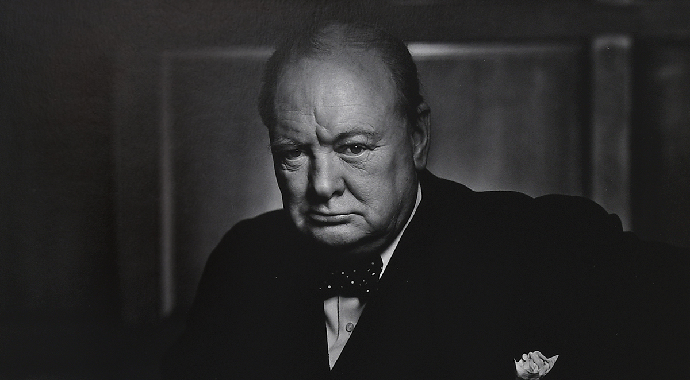

Sir Winston Leonard Spencer Churchill (30 November 1874 – 24 January 1965) was a British statesman, military officer, and writer who was Prime Minister of the United Kingdom from 1940 to 1945 (during the Second World War) and again from 1951 to 1955. For some 62 of the years between 1900 and 1964, he was a member of Parliament (MP) and represented a total of five constituencies over that time. Ideologically an adherent to economic liberalism and imperialism, he was for most of his career a member of the Conservative Party, which he led from 1940 to 1955. He was a member of the Liberal Party from 1904 to 1924.